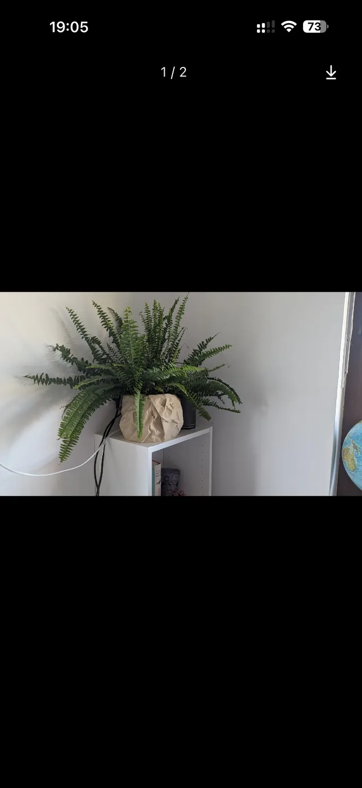
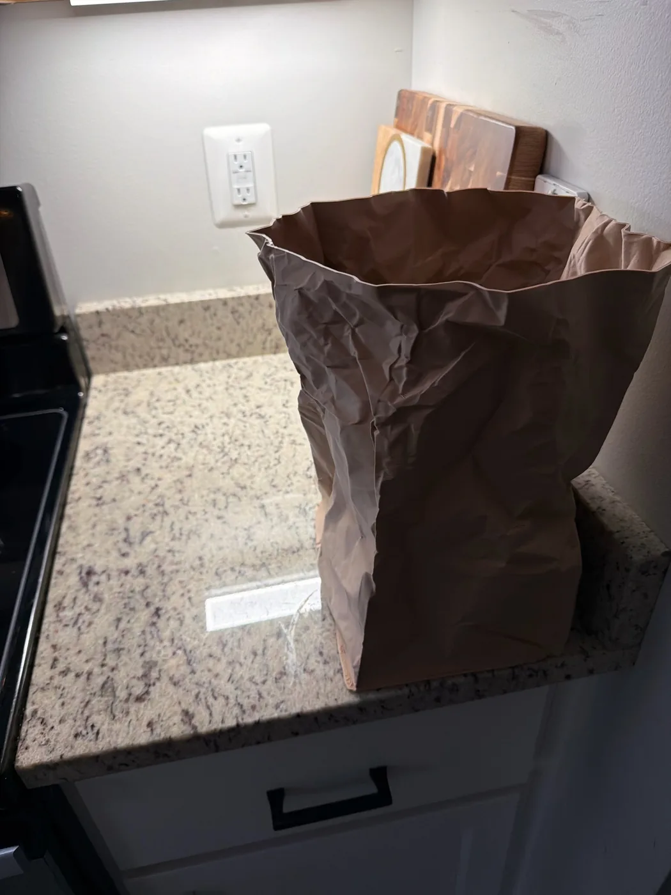
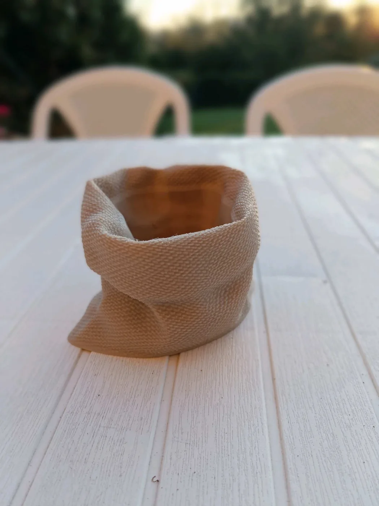

Разные размеры
Выберите компактный, средний или крупный вариант в зависимости от желаемого формата.
Фактурные формы, милые персонажи и разные варианты исполнения. Каждую модель можно напечатать в выбранном размере и цвете.
 Размер и цвет на выбор
Размер и цвет на выборВыберите компактный, средний или крупный вариант в зависимости от желаемого формата.
Молочный, песочный, терракотовый, шалфейный, графитовый и другие оттенки.
Стоимость рассчитывается индивидуально после уточнения модели, размера и цвета.
На фотографиях показаны примеры исполнения. Размер и цвет можно выбрать при заказе.
Круглое фактурное кашпо с эффектом смятой бумаги. Доступно в разных размерах и цветах.
Высокое кашпо, которое выглядит как настоящий бумажный пакет. Доступно в разных размерах и цветах.
Кашпо с реалистичной тканевой фактурой и мягким отворотом. Возможно изготовление с поддоном.
Забавный персонаж закрывает глаза ладошками. Уютный акцент для полки или рабочего стола.
Персонаж обнимает колени. Доступен в разных размерах и цветах.
Кашпо с руками, сложенными в сердце. Тёплый подарок для дома и близкого человека.
Минималистичное кашпо с улыбкой и ладошками у щёк. Нежное и немного мультяшное.
Персонаж бережно держит спящего котика. Самая PawCraft-модель в коллекции.
Кашпо-дракон с рожками, крыльями и хвостом. Для любителей фэнтези и необычных деталей.




Выберите модель, желаемый размер и цвет. После уточнения деталей мы рассчитаем итоговую стоимость.